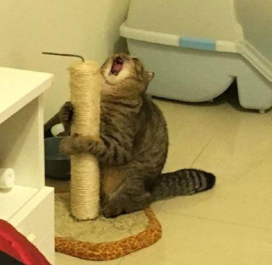

고양이 짤 성격 테스트

당신의 고양이는
"내집내놔 고양이"
입니다
정신이 산만한 성격이에요. 관심이나 흥미가 생겨버리면 그 순간 겁나 열정적으로 변해요. 근데 쉽게 그만두는 게 단점이에요. 아마 일 크게 만들어 놓고 흥미가 사라져서 안 한 일이 오조오억개에요. 반대로 관심이 없으면 알고 싶어 하지도 않아요. 그리고 약간 집순이 기질이 있지만 또 나만 빼고 노는 것은 참을 수 없어요.